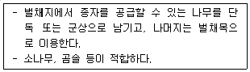
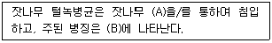
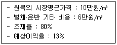
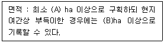
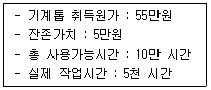

산림산업기사 (2016-05-08 기출문제)
1과목: 조림학
1. 종자를 건조 상태로 저장하는 수종으로 가장 부적합한 것은?
- 편백
- 삼나무
- 소나무
- 굴참나무
(정답률: 72%)

2. 겉씨식물의 특성으로 옳은 것은?
- 헛물관이 있다.
- 잎은 그물맥이다.
- 중복수정을 한다.
- 밑씨가 씨방 속에 들어 있다.
(정답률: 75%)
3. 잎의 기공에서 이뤄지는 개폐기작과 가장 관련 있는 것은?
- 인산
- 칼륨
- 칼슘
- 질소
(정답률: 68%)
4. 가식에 대한 설명으로 옳지 않은 것은?
- 상록수는 묘목 전체를 묻는다.
- 가식장소는 배수가 잘 되는 곳을 택한다.
- 춘기에는 묘목의 끝을 북쪽으로 묻는다.
- 오랫동안 가식할 때는 다발을 풀고 낱개로 펴서 묻는다.
(정답률: 75%)
5. 밀식조림에 대한 설명으로 옳지 않은 것은?
- 수관이 빨리 울폐되고 임지의 침식을 막는다.
- 조림 비용이 더 소요되고 작업량이 많아진다.
- 개체목 간 경쟁으로 인한 근계발달이 촉진된다.
- 키가 큰 나무를 빨리 이용하고자 할 때 유리하다.
(정답률: 75%)
6. 무성번식에 대한 설명으로 옳지 않은 것은?
- 클론 보존이 가능하다.
- 모수보다 우수한 유전형질 변화를 기대할 수 있다.
- 종자번식이 어려운 수목의 후계목 조성이 가능하다.
- 소나무는 다른 수종에 비하여 삽목 발근이 어려운 편이다.
(정답률: 78%)
7. 인공조림의 장점이 아닌 것은?
- 집약적인 관리가 가능하다.
- 조림수종 선택의 폭이 넓다.
- 동령단순 경제림 조성이 용이하다.
- 천연갱신에 비해 활착률이 더 높다.
(정답률: 81%)
8. 어린나무 가꾸기나 천연림 보육작업 등의 잡목 솎아내기 작업이 끝난 후부터 최종 수확 때까지 숲을 가꾸는 작업은?
- 간벌
- 제벌
- 덩굴제거
- 가지치기
(정답률: 80%)
9. 산림토양 내 유기물에 대한 설명으로 옳지 않은 것은?
- 보수력을 감소시킨다.
- 토양을 산성화 시킨다.
- 토양구조를 개량한다.
- 무기영양소의 흡착능력을 증가시킨다.
(정답률: 68%)
10. 수분 이후 종자성숙까지 소요되는 기간이 가장 긴 수종은?
- 회양목
- 사시나무
- 졸참나무
- 상수리나무
(정답률: 57%)
11. 잎보다 꽃이 먼저 피는 수종은?
- Juglans regia
- Prunus yedoensis
- Aesculus turbinata
- Ligustrum obtusifolium
(정답률: 59%)
12. 목재 수피 등 물질적 생산을 위하여 경영되는 산림은?
- 원시림
- 단순림
- 경제림
- 보안림
(정답률: 91%)
13. 묘포지에 가장 알맞은 토양은?
- 사토
- 양토
- 점토
- 사양토
(정답률: 81%)
14. 근주묘(뿌리묘목)의 표시로 옳은 것은?
- 0/0묘
- 1/2묘
- 0/2묘
- 1/1묘
(정답률: 72%)
15. 종자의 순량율에 대한 설명으로 옳은 것은?
- 종자 1000립의 무게
- 실중에 발아율을 곱한 값
- 종자 100립 중에서 발아한 종자의 비율
- 전체 종자 무게 중에서 순정종자 무게의 비율
(정답률: 79%)
16. 종자의 구조에 대한 설명으로 옳은 것은?
- 배, 내피, 외피로 구성된다.
- 배, 배유, 종피로 구성된다.
- 배유, 자엽, 배축으로 구성된다.
- 유아, 자엽, 외곽조직으로 구성된다.
(정답률: 82%)
17. 노지양묘에서 판갈이 시작년도가 가장 늦은 것은?
- 곰솔
- 소나무
- 삼나무
- 가문비나무
(정답률: 62%)
18. 수목이 생명현상을 유지하는 데 에너지의 역할이 아닌 것은?
- 세포의 분열
- 체온의 유지
- 탄수화물의 저장
- 무기영양소의 흡수
(정답률: 66%)
19. 산림용 고형복합비료의 주성분이 아닌 것은?
- 인산
- 칼륨
- 칼슘
- 질소
(정답률: 67%)
20. 다음 설명에 해당하는 작업종은?

- 모수작업
- 개벌작업
- 택벌작업
- 중림작업
(정답률: 87%)
2과목: 산림보호학
21. 흡즙성 해충이 아닌 것은?
- 뽕나무이
- 버들잎벌레
- 분홍다리노린재
- 진달래방패벌레
(정답률: 60%)
22. 살충제 종류별 작용기작으로 옳지 않은 것은?
- 소화중독제 : 해충의 입으로 들어가면 소화관내에서 중독작용을 일으킨다.
- 침투성 살충제 : 약제를 해충의 체표면에 직접 살포하여 중독작용을 일으킨다.
- 훈증제 : 약제의 유효성분을 가스상태로 해충의 호흡기에 침입하여 사망시킨다.
- 제충제 : 해충을 즉시 죽이지 않고 발육과 생식을 억제하여 해충의 밀도를 저하시킨다.
(정답률: 78%)
23. 해충의 개체군 동태를 알기위해서 주로 사용하는 것으로 충태별 사망수, 사망요인, 사망률 등의 항목으로 구성된 표는?
- 생명표
- 생태표
- 생식표
- 수명표
(정답률: 77%)
24. 항생제 계통인 살균제는?
- 만코제브 수화제
- 메탈락실 수화제
- 보르도혼합액 입상수화제
- 옥시테트라사이클린 수화제
(정답률: 73%)
25. 오동나무 빗자루병의 병원체는?
- 세균
- 곰팡이
- 바이러스
- 파이토플라스마
(정답률: 85%)
26. 유충이 침엽수와 활엽수를 모두 가해하는 해충은?
- 독나방
- 매미나방
- 천막벌레나방
- 미국흰불나방
(정답률: 65%)
27. 기주식물의 수간 및 가지 등에 구멍을 뚫어 피해를 주는 천공성 해충이 아닌 것은?
- 박쥐나방
- 알락하늘소
- 버들바구미
- 솔껍질깍지벌레
(정답률: 67%)
28. 다음 ()안에 들어갈 용어는?

- A : 잎, B : 줄기
- A : 잎, B : 열매
- A : 뿌리, B : 줄기
- A : 뿌리. B : 열매
(정답률: 79%)
29. 곤충의 청각기관이 아닌 것은?
- 감각털
- 고막기관
- 알라타체
- 존스톤기관
(정답률: 72%)
30. 균류에 대한 설명으로 옳지 않은 것은?
- 자낭균류 : 균류 중 가장 많이 종이 있으며 균사에 격벽이 있다.
- 난균류 : 균사에 격벽이 없고 무성포자인 유주포자를 생성한다.
- 담자균류 : 대부분의 버섯이 속하는 것으로 격벽을 가지고 있는 다세포이다.
- 불완전균류 : 유성생식으로 번식하며 분생포자 형성기관에 따라 재분류된다.
(정답률: 64%)
31. 지표화로부터 연소되는 경우가 많고, 나무의 공동부가 굴뚝과 같은 작용을 하는 산불의 종류는?
- 수간화
- 수관화
- 지상화
- 지중화
(정답률: 75%)
32. 모잘록병의 피해형태가 아닌 것은?
- 직립형
- 근부형
- 도복형
- 지중부패형
(정답률: 67%)
33. 수목병을 발생하는 세균 중 막대 모양은?
- 간균
- 구균
- 나선균
- 방선균
(정답률: 70%)
34. 볕데기(피소현상)이 잘 발생하지 않는 수종은?
- 단풍나무
- 굴참나무
- 오동나무
- 배롱나무
(정답률: 72%)
35. 수목 바이러스병 진단에 사용하는 지표식물이 아닌 것은?
- 콩
- 담배
- 버섯
- 명아주
(정답률: 68%)
36. 삼나무 붉은마름병균은 어느 균류에 속하는가?
- 조균
- 자낭균
- 담자균
- 불완전균
(정답률: 49%)
37. 소나무좀의 월동 충태는?
- 알
- 유충
- 성충
- 번데기
(정답률: 65%)
38. 수목의 잎을 가해하는 식엽성 해충이 아닌 것은?
- 낙엽송잎벌
- 전나무잎응애
- 참나무재주나방
- 잣나무넓적잎벌
(정답률: 57%)
39. 녹병균의 생활사에서 핵융합으로 핵상이 2n으로 되는 시기는?
- 녹포자
- 녹병정자
- 겨울포자
- 여름포자
(정답률: 48%)
40. 성충은 흡즙 가해하고 유충은 잎을 식엽 가해하는 것은?
- 솔나방
- 소나무좀
- 오리나무잎벌레
- 느티나무벼룩바구미
(정답률: 42%)
3과목: 임업경영학
41. 다음 조건에서 시장가역산법에 의한 임목의 m3당 매매가는?

- 약 21,100원
- 약 22,800원
- 약 25,600원
- 약 29,700원
(정답률: 56%)
42. 10년 후에 산림의 가치가 백만원이고 산림의 연간 생장률(총 가격생장률)이 6%이면 현재가는?
- 458,400원
- 558,400원
- 1,690,800원
- 1,790,800원
(정답률: 55%)
43. 임황조사에서 경사도 구분으로 옳지 않은 것은?
- 험준지(험) : 경사 25°이상
- 완경사지(완) : 경사 15°미만
- 경사지(경) : 경사 15~20°미만
- 급경사지(급) : 경사 20~25°미만
(정답률: 70%)
44. 국유림경영계획의 산림구획에서 소반면적에 대한 설명으로 다음 (A)에 해당하는 것은?

- 0.1
- 0.5
- 1
- 100
(정답률: 68%)
45. 법정상태와 관련된 용어에 대한 설명으로 옳지 않은 것은?
- 법정생장량 : 법정축적의 평균생장량이다.
- 법정축적 : 영급분배와 생장상태가 법정일 때 보유할 작업급으로서 전체 축적이다.
- 법정영급분배 : 해마다 균등한 수확을 할 수 있도록 각 영급의 면적을 동일하게 하는 것이다.
- 법정임분배치 : 임목 이용, 보호 및 갱신을 위하여 각 임분이 적절한 배치 상태를 유지하는 조건이다.
(정답률: 52%)
46. 감가상각비 계산 방법 중 감가율은 일정하지만 상각비는 등비급수적으로 체감하는 것은?
- 정률법
- 정액법
- 등비급수법
- 연수합계법
(정답률: 51%)
47. 연년생장량과 평균생장량과의 관계에 대한 설명으로 옳지 않은 것은?
- 성장 초기에는 연년생장량이 더 크다.
- 평균 생장량의 극대점에서는 연년 생장량이 더 크다.
- 연년생장량은 평균생장량보다 빨리 극대점을 가진다.
- 평균생장량이 극대점에 이르기까지는 연년생장량이 항상 더 크다.
(정답률: 68%)
48. 임목자산의 구성 상태로서 질적지표를 나타내는 것은?
- 경영자가 보유하고 있는 전체 산림면적
- 경영자가 보유하고 있는 임목자산장비율
- 경영자가 보유하고 있는 임목자산 중에서 부채가 차지하는 비율
- 경영자가 보유하고 있는 임목자산 중에서 인공림이 차지하는 비율
(정답률: 62%)
49. 다음 조건에서 작업시간비례법에 의한 총감가상각비는?

- 20,000원
- 22,500원
- 25,000원
- 30,000원
(정답률: 68%)
50. 임업경영의 경제적 특성에 대한 설명으로 옳지 않은 것은?
- 임업생산은 조방적이다.
- 공익성이 커서 제한성이 많다.
- 육성임업과 채취임업은 병존한다.
- 임업노동은 계절적 제약을 크게 받는다.
(정답률: 70%)
51. 어떤 재화로부터 장차 얻을 수 있을 것으로 기대되는 수익을 일정한 이율로 할인하여 구한 현재가를 무엇이라 하는가?
- 매매가
- 비용가
- 기망가
- 자본가
(정답률: 83%)
52. 지위지수에 대한 설명으로 옳은 것은?
- 임지의 생산력 판단지표이다.
- 택벌작업을 하는 산림에 설정되는 기간개념이다.
- 10등급으로 임도 또는 도로까지의 거리를 100m단위로 구분하는 것이다.
- 작업급에 의한 산림의 생산조직화에 있어 이상적인 개념으로 제시된 산림조직이다.
(정답률: 70%)
53. 수간석해도 작성방법에 해당하는 것은?
- 절충법
- 평행선법
- 원주등분법
- 삼각등분법
(정답률: 47%)
54. 매년 말마다 산림관리비로 1000만원이 필요하고 연이율 5%일 때 자본가는?
- 50만원
- 1⑤0만원
- 2억원
- 2억1천만원
(정답률: 54%)
55. 표준지 매목조사 중 흉고직경 측정에 대한 설명으로 옳지 않은 것은?
- 2cm 괄약을 이용한다.
- 흉고직경 6cm 이상이 측정 대상이다.
- 흉고란 땅 위에서 1.2m의 높이를 말한다.
- 흉고직경 측정기구로 아브네이레블이 있다.
(정답률: 69%)
56. 다음 중 소반을 구획하는 경우가 아닌 것은?
- 지종구분이 서로 다를 때
- 임종 및 작업종이 서로 다를 때
- 임령 및 지위의 차이가 현저할 때
- 병충해 피해나 간벌작업이 이루어 질 때
(정답률: 65%)
57. 임업경영요소 중 유동자본에 속하는 것은?
- 임도
- 종자
- 기계톱
- 사무실
(정답률: 75%)
58. 물가상승과 도로, 철도 등의 개설로 인한 운반비의 절약에 기인하는 산림의 임목가격의 상승을 의미하는 것은?
- 재적생장
- 형질생장
- 근원생장
- 등귀생장
(정답률: 81%)
59. 임업경영 분석에 대한 설명으로 옳지 않은 것은?
- 임업소득은 임업조수익에서 임업경영비를 뺀 값이다.
- 임가소득은 임업소득, 농업소득, 기타소득을 더한 값이다.
- 임업의존도는 임가소득을 임업소득으로 나누어 100을 곱한 값이다.
- 임업소득율은 임업소득에서 임업조수익을 나누어 100을 곱한 값이다.
(정답률: 65%)
60. Huber 식의 약 10,⑤3배 과대치를 주고 중앙단면이 원이 아닐때 오차가 더 커지는 구적식은?
- 5분주법
- 호퍼스법
- 브레레튼법
- 스크리브너 로그 룰
(정답률: 73%)
4과목: 산림공학
61. 포장을 하지 않은 임도 노면의 경우에 횡단기울기 시설 기준은?
- 0 ~ 1%
- 1.5 ~ 2%
- 3 ~ 5%
- 6 ~ 7%
(정답률: 60%)
62. 임도의 사면 붕괴 원인으로 옳지 않은 것은?
- 사면 토양의 점착력 감소
- 사면 토양의 공급 수압 감소
- 온도변화에 의한 사면 토양의 입자 신축
- 눈 및 빗물로 인한 사면 토양의 과다한 하중 발생
(정답률: 67%)
63. 스키더 또는 타워야더 등에 의해 집재된 전목재의 가지제거, 절단, 초두부 제거, 집적 등의 조재작업을 전문적으로 실행하는 기계는?
- 포워더
- 하베스터
- 프로세서
- 펠러번쳐
(정답률: 61%)
64. 사방댐의 시공적지로 옳지 않은 것은?
- 상류부의 계폭이 좁은 곳
- 계상과 양안에 암반이 존재하는 곳
- 수생태계에 미치는 영향이 크지 않은 곳
- 지류의 합류점 부근에서는 합류점의 하류지역
(정답률: 60%)
65. 벌도작업 시 쐐기 사용의 주목적은?
- 작업 능률 향상
- 벌도 방향 결정
- 박피 작업 유리
- 작업 비용 절감
(정답률: 73%)
66. 임도 설계업무의 순서로 옳은 것은?
- 예비조사 → 답사 → 예측 → 실측 → 설계도작성
- 예비조사 → 예측 → 답사 → 실측 → 설계도작성
- 답사 → 예비조사 → 예측 → 실측 → 설계도작성
- 답사 → 예비조사 → 실측 → 예측 → 설계도작성
(정답률: 79%)
67. 앞모래언덕의 뒤쪽으로 바람에 의한 모래날림을 방지하고 식생의 생육환경을 조성하기 위해 가장 적합한 공법은?
- 모래덮기
- 퇴사울세우기
- 정사울세우기
- 구정바자얽기
(정답률: 63%)
68. 임도시공 시 사용하는 용어에 대한 설명으로 옳지 않은 것은?
- 준설 : 물 속의 흙을 파내는 것
- 취토장 : 흙이 남아서 버리는 곳
- 매립 : 물에 흙을 메워 육지로 만드는 것
- 흙일 : 흙을 깎거나 쌓아 올리는 모든 작업
(정답률: 70%)
69. 유역면적의 단위가 ha일 때 유량공식으로 옳은 것은? (단, C : 유출계수, I : 강우강도(mm/hr), A : 면적)
- Q = 2778CIA(m3/sec)
- Q = 0.2778CIA(m3/sec)
- Q = 0.02778CIA(m3/sec)
- Q = 0.002778CIA(m3/sec)
(정답률: 66%)
70. 횡단배수구 설치에 대한 설명으로 옳지 않은 것은?
- 옆도랑의 물을 처리하기 위해 설치
- 표면배수 또는 지하배수를 처리하기 위해 설
- 배수관의 연결부 또는 배수시설의 단면이 변화하는 곳에 설치
- 작은 골짜기 유역으로부터 집수되는 유수처리를 처리하기 위해 설치
(정답률: 50%)
71. 산복수로공에 대한 설명으로 옳지 않은 것은?
- 유수가 집중되는 凹부에 설치한다.
- 떼수로공은 집수구역이 좁은 곳에 설치한다.
- 수로의 시작과 끝에는 반드시 수평대공작물을 적용한다.
- 가급적 수로의 기울기는 상부에서 하부로 내려가면서 감소하게 계획된다.
(정답률: 60%)
72. 트랙터의 구입가격이 5000만원이고 수명이 5000시간이며 잔존가치는 구입가격의 20%일 때 이 기계의 시간당 감가상각비는?
- 1,250원
- 8,000원
- 12,500원
- 80,000원
(정답률: 67%)
73. 벌도 시 벌목방향을 확정하고 벌도목이 쪼개지는 것을 방지하기 위하여 근원 부근에 만드는 것은?
- 추구
- 수구
- 벌도구
- 수평구
(정답률: 70%)
74. 가선집재작업이 수행 가능한 장비로 가장 효율적인 것?
- 하베스터
- 펠러번처
- 프로세서
- 타워야더
(정답률: 72%)
75. 중력침식에 속하지 않는 것은?
- 산붕
- 산사태
- 땅밀림
- 해안사구
(정답률: 77%)
76. 지선임도 밀도가 10m/ha이며, 임도효율요인이 4인 경우 트랙터를 이용한 평균집재거리는?
- 2.5M
- 40M
- 400M
- 2,500M
(정답률: 34%)
77. 단면 A의 면적은 180m2, 단면 B의 면적은 600m2이고 양단면 사이의 거리가 20m이면 양단면적평균법을 이용한 토량(m3)은?
- 7,800
- 8,600
- 9,400
- 12,600
(정답률: 64%)
78. 시멘트 저장 중에 공기 중의 수분을 흡수하여 경미한 수화작용을 일으키고, 그 결과 생긴 수산화칼슘이 공기 중의 이산화탄소와 결합하여 탄산칼슘이 만들어져서 시멘트 강도가 약해지는 작용은?
- 풍화
- 응결
- 경화
- 분말도
(정답률: 69%)
79. 방위각 275°를 방위로 표기하면 다음 중 어느 것인가?
- N85°W
- S85°W
- N95°W
- S95°W
(정답률: 57%)
80. 임도의 너비 설치 기준으로 옳지 않은 것은?
- 배향곡선지의 경우 유효너비 6m이상으로 한다.
- 길어깨 및 옆도랑의 너비는 각각 50cm ~ 1m 범위로 한다.
- 임도의 곡선 반경이 10m 이상일 경우 곡선부 너비를 확대한다.
- 길어깨 및 옆도랑을 포함한 임도의 너비는 3m를 기준으로 한다.
(정답률: 60%)